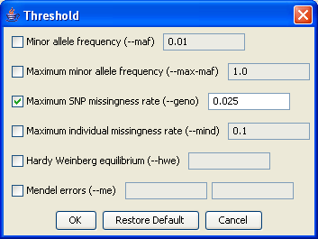

|  |
ThresholdsAlthough we will not use this feature here, SNPs and/or individuals can also be filtered based on Thresholds. These include statistics such as allele frequency or genotyping rate. You'll find that the bottom of each analysis dialog usually has a Thresholds as well as a Filters button.Previous | Next |